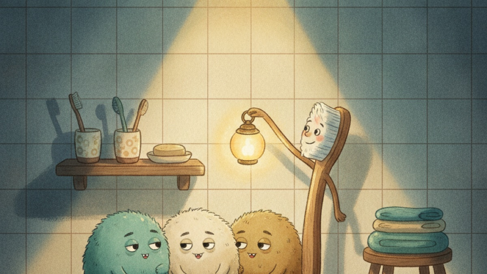
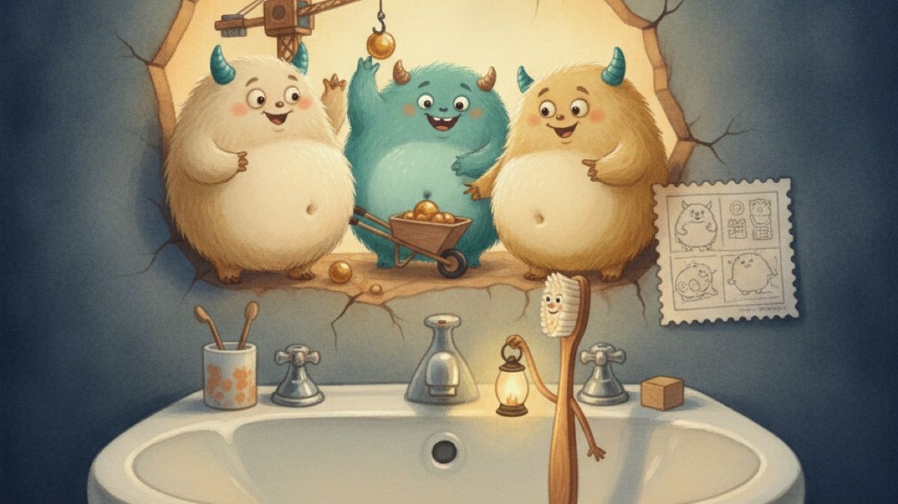
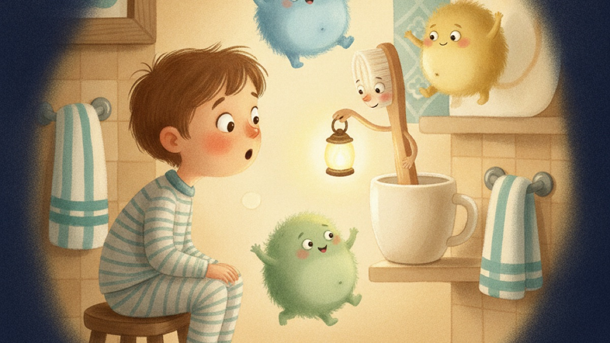
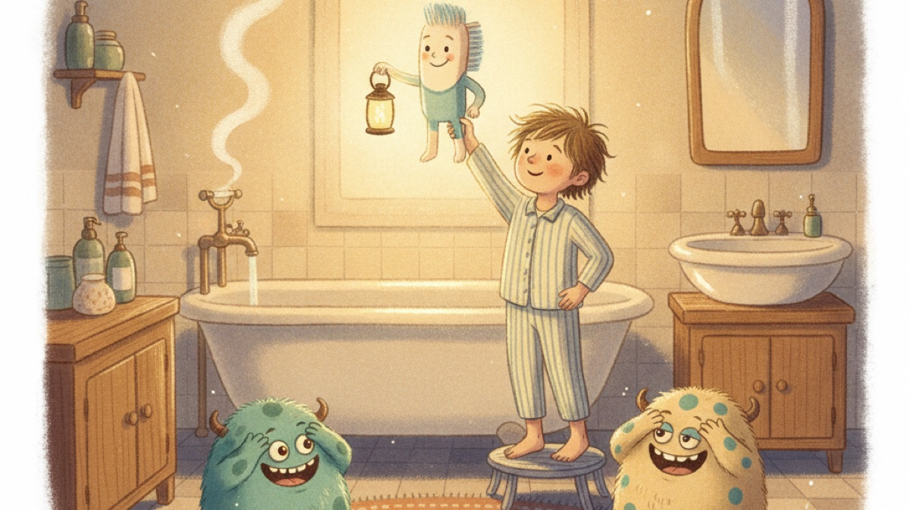

Najpierw czytasz. Potem decydujesz.
Tak zaczyna się bajka o myciu zębów. Wpisz imię dziecka — podstawimy je w tekście i od razu zobaczysz, jak to działa.

W małej łazience, na półce między kubeczkiem a mydłem, mieszka Iskierka. Za dnia wygląda jak zwykła szczoteczka do zębów. Ale kiedy wieczorem gaśnie światło, Iskierka zapala swoją małą latarnię i nasłuchuje. Bo zza umywalki dochodzi cichy szelest…

Za umywalką, w ciepłej szparze, mieszkają Bakteryjne Potworki — trzy puszyste stworki z brzuszkami jak poduszki. Najbardziej na świecie lubią słodkie resztki i budowanie. — Dziś budujemy pałac! — bulgocze najmniejszy. — Z basenem! — dodaje drugi. Mają tylko jeden problem: pałac chcą zbudować… między czyimiś zębami.

Iskierka wie, że sama nie wystarczy. Potrzebuje kogoś, kto zna tę łazienkę najlepiej na świecie. Puka delikatnie w kubeczek. — Bohaterze, słyszysz mnie? Potworki budują pałac między twoimi zębami. Tylko ty możesz urządzić im Wielką Powódź. Chcesz zobaczyć, jak twoje zęby świecą jak gwiazdy?

Wystarczy jedno skinienie głowy — i misja się zaczyna. Latarnia Iskierki rozlewa po łazience złote światło, a Bohater trzyma szczoteczkę jak statek kosmiczny. — Trzymaj się! — szepcze Iskierka. — Płyniemy prosto do Zębowego Miasta! Potworki jeszcze nie wiedzą, że to będzie wieczór, którego nigdy nie zapomną…
Tu kończy się początek. Cała bajka — kilkanaście stron, 4–6 rozdziałów, z imieniem, wyglądem i przygodami Twojego dziecka — czeka dalej. I nadal: najpierw ją zobaczysz, dopiero potem zdecydujesz o zakupie.
Uczciwie: to fragment szablonowy, żeby można było poczuć klimat. Bajkę Twojego dziecka przygotujemy od zera — na podstawie tego, co nam o nim opowiesz.
Od wieczornej bitwy do bajki — w trzech krokach
Żadnych płatności z góry. Żadnych zobowiązań.
Opowiadasz o dziecku
Imię, wiek, jak wygląda, co jest najtrudniejsze przy myciu zębów. To zajmuje około 3 minuty.
Bajka powstaje
Pisze ją AI według sprawdzonego schematu bajek terapeutycznych — o Twoim dziecku, z jego imieniem i wyglądem. Gotowa jest zwykle w około pół godziny.
Czytasz całość. Dopiero potem płacisz
Przeglądasz bajkę od pierwszej do ostatniej strony. Podoba się? Płacisz i pobierasz. Nie? Nie płacisz nic.
Pierwszą osobą, która przeczyta bajkę Twojego dziecka, jesteś Ty — nie dziecko. Zacznę kreator →
Cena na wierzchu: 49 albo 99 zł. I tyle.
Zero abonamentu, zero gwiazdek. Płacisz dopiero po przeczytaniu całej bajki.
- Cała bajka z ilustracjami do czytania z ekranu
- Możesz wydrukować w domu
- Na Twoim koncie od razu po opłaceniu
PDF + drukowana książka
- Wszystko z wersji PDF
- Kolorowa książka do przytulania i wspólnego czytania
- Dostawa kurierem w 3–5 dni roboczych — wysyłka po Polsce w cenie
Zapłacisz, a potem zmienisz zdanie? Zwracamy pieniądze — wystarczy jeden mail, bez pytań.
Wygeneruj bajkę — zapłacisz, gdy Ci się spodoba →Dwie prawdziwe opinie. I jedno uczciwe „dopiero zbieramy”.
„Cena jak za zwykłą książkę z księgarni, a bajka napisana na konkretny problem mojej córki. To w ogóle nieporównywalne.”
Jak może wyglądać wieczór po bajce?
Na taki liczymy: dziecko prosi o tę samą bajkę drugi i trzeci wieczór, przy umywalce samo wspomina Iskierkę, a szczoteczka przestaje być wrogiem — bo to już rekwizyt z jego historii. Czy tak będzie u Was? Sprawdzisz bez ryzyka: całą bajkę czytasz przed zakupem.
„Zamówiłem druk i wysłałem na urodziny chrześniaka. Mama przysłała filmik, jak chłopiec zobaczył siebie na okładce — bezcenne.”
Dwie opinie pochodzą od klientów Bajkoterapii. Środkowy tekst to scenariusz, na który liczymy — opinie o efektach u dzieci dopiero zbieramy.
Spokojnie: najpierw czytasz Ty
- Dziecko widzi bajkę dopiero po Tobie. Cała historia najpierw trafia na Twoje konto — dziecko zobaczy ją tylko wtedy, gdy uznasz, że jest w porządku.
- Każdą bajkę dodatkowo sprawdza recenzent AI. Zanim ją dostaniesz, osobny recenzent pilnuje: zero straszenia, zero moralizatorstwa, zero wstydu.
- Potworki są śmieszne, nie straszne. Bakteryjne Potworki budują pałace i bulgoczą. Dziecko ma się śmiać i kibicować — nie bać.
- To, co opowiesz o dziecku, służy tylko jego bajce. Nie sprzedajemy tych informacji, nie pokazujemy ich innym i nie używamy do reklam. Szczegóły w polityce prywatności.
Pytania, które pewnie masz
Kiedy bajka będzie gotowa?
Zwykle około pół godziny po wypełnieniu kreatora. Możesz zostawić stronę z postępem otwartą albo wrócić później — bajka poczeka.
Ile stron ma bajka?
Kilkanaście stron: 4–6 rozdziałów z kolorowymi ilustracjami. Długość dopasowujemy do wieku dziecka.
Kto pisze bajkę?
AI — według schematu bajek terapeutycznych: bezpieczny początek, wyzwanie, mądry przewodnik i zwycięstwo. Mówimy o tym wprost, bo nie mamy nic do ukrycia: każdą historię dodatkowo sprawdza recenzent AI, a ostatnie słowo zawsze należy do rodzica.
Czy to na pewno zadziała na moje dziecko?
Nie wiemy — i uważamy, że nikt, kto obiecuje „na pewno”, nie jest z Tobą szczery. Każde dziecko jest inne. Dlatego u nas nie kupujesz kota w worku: najpierw czytasz całą bajkę, oceniasz ją rodzicielskim okiem i dopiero wtedy decydujesz. A po zakupie zostaje zwrot bez pytań.
Jak w ogóle nauczyć dziecko mycia zębów bez walki?
W poradach stomatologów dziecięcych przewijają się trzy rzeczy: stały rytuał o tej samej porze, robienie tego razem i zero siłowania. Bajka dokłada czwarte: daje dziecku własny powód — bohatera, do którego chce się upodobnić. Nie zastępuje rytuału, tylko go zapala.
Czy muszę podawać kartę, żeby zobaczyć bajkę?
Nie. Bajkę generujesz i czytasz w całości bez podawania karty. Płatność pojawia się dopiero, gdy zdecydujesz, że chcesz ją zachować.
A jeśli bajka mi się nie spodoba?
Po prostu nie płacisz — i tyle. A jeśli już zapłacisz i zmienisz zdanie, masz zwrot bez podawania powodu. Wystarczy jedna wiadomość.
Dziś wieczorem przy umywalce może być inaczej.
Wypełnienie kreatora zajmie Ci 3 minuty, a bajka będzie gotowa w około pół godziny. A zapłacisz tylko wtedy, gdy Ci się spodoba.
Stwórz bajkę o moim dziecku →Bez karty · widzisz całość przed zakupem · zwrot bez pytań